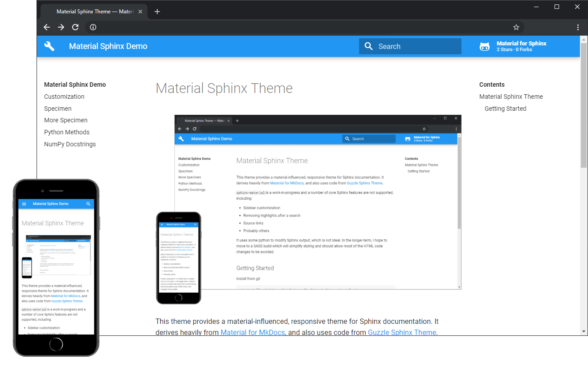

1. Customization ¶
안녕하세요. 반갑습니다. 고객 레코드는 파트너 센터에서 가장 중요 한 정보 자산 중 하나입니다. 고객 계정의 데이터베이스를 검색 하거나, 전체 고객 데이터베이스를 내보내거나, 하위 집합을 Excel과 호환 되는 쉼표로 구분 된 값 파일 형식 (.csv)으로 내보낼 수 있습니다. 고객의 구독 정보를 .csv 파일로 내보낼 수도 있습니다. 활동 로그는 또한 고객에 대 한 트랜잭션 및 관리 작업에 대해 내보낼 수 있는 데이터를 제공 합니다. 자세한 내용은 고객 활동 로그 보기를 참조 하세요.
This theme provides a responsive Material Design theme for Sphinx documentation. It derives heavily from Material for MkDocs , and also uses code from Guzzle Sphinx Theme .
There are two methods to alter the theme. The first, and simplest, uses the
options exposed through
html_theme_options
in
conf.py
. This site’s
options are:
html_theme_options = {
'base_url': 'http://bashtage.github.io/sphinx-material/',
'repo_url': 'https://github.com/bashtage/sphinx-material/',
'repo_name': 'Material for Sphinx',
'google_analytics_account': 'UA-XXXXX',
'html_minify': True,
'css_minify': True,
'nav_title': 'Material Sphinx Demo',
'logo_icon': '',
'globaltoc_depth': 2
}
The complete list of options with detailed explanations appears in
theme.conf
.
1.1. Configuration Options ¶
-
nav_title -
Set the name to appear in the left sidebar/header. If not provided, uses html_short_title if defined, or html_title.
-
touch_icon -
Path to a touch icon, should be 152x152 or larger.
-
google_analytics_account -
Set to enable google analytics.
-
repo_url -
Set the repo url for the link to appear.
-
repo_name -
The name of the repo. If must be set if repo_url is set.
-
repo_type -
Must be one of github, gitlab or bitbucket.
-
base_url -
Specify a base_url used to generate sitemap.xml links. If not specified, then no sitemap will be built.
-
globaltoc_depth -
The maximum depth of the global TOC; set it to -1 to allow unlimited depth.
-
globaltoc_collapse -
If true, TOC entries that are not ancestors of the current page are collapsed.
-
globaltoc_includehidden -
If true, the global TOC tree will also contain hidden entries.
-
theme_color -
The theme color for mobile browsers. Hex Color without the leading #.
-
color_primary -
Primary color. Options are red, pink, purple, deep-purple, indigo, blue, light-blue, cyan, teal, green, light-green, lime, yellow, amber, orange, deep-orange, brown, grey, blue-grey, and white.
-
color_accent -
Accent color. Options are red, pink, purple, deep-purple, indigo, blue, light-blue, cyan, teal, green, light-green, lime, yellow, amber, orange, and deep-orange.
-
html_minify -
Minify pages after creation using htmlmin.
-
html_prettify -
Prettify pages, usually only for debugging.
-
css_minify -
Minify css files found in the output directory.
-
logo_icon -
Set the logo icon. Should be a pre-escaped html string that indicates a unicode point, e.g.,
''which is used on this site. -
master_doc -
Include the master document at the top of the page in the breadcrumb bar. You must also set this to true if you want to override the rootrellink block, in which case the content of the overridden block will appear
-
nav_links -
A list of dictionaries where each has three keys:
-
href: The URL or pagename (str) -
title: The title to appear (str) -
internal: Flag indicating to use pathto to find the page. Set to False for external content. (bool)
-
-
heroes -
A
dict[str,str]where the key is a pagename and the value is the text to display in the page’s hero location. -
version_dropdown -
A flag indicating whether the version drop down should be included. You must supply a JSON file to use this feature.
-
version_dropdown_text -
The text in the version dropdown button
-
version_json -
The location of the JSON file that contains the version information. The default assumes there is a file versions.json located in the root of the site.
-
version_info -
A dictionary used to populate the version dropdown. If this variable is provided, the static dropdown is used and any JavaScript information is ignored.
-
table_classes -
A list of classes to not strip from tables. All other classes are stripped, and the default table has no class attribute. Custom table classes need to provide the full style for the table.
1.2. Sidebars ¶
You must set
html_sidebars
in order for the side bar to appear. There are
four in the complete set.
html_sidebars = {
"**": ["logo-text.html", "globaltoc.html", "localtoc.html", "searchbox.html"]
}
You can exclude any to hide a specific sidebar. For example, if this is changed to
html_sidebars = {
"**": ["globaltoc.html"]
}
then only the global ToC would appear on all pages (
**
is a glob pattern).
1.3. Customizing the layout ¶
You can customize the theme by overriding Jinja template blocks. For example, ‘layout.html’ contains several blocks that can be overridden or extended.
Place a ‘layout.html’ file in your project’s ‘/_templates’ directory.
mkdir source/_templates
touch source/_templates/layout.html
Then, configure your ‘conf.py’:
templates_path = ['_templates']
Finally, edit your override file
source/_templates/layout.html
:
{# Import the theme's layout. #}
{% extends '!layout.html' %}
{%- block extrahead %}
{# Add custom things to the head HTML tag #}
{# Call the parent block #}
{{ super() }}
{%- endblock %}
1.4. New Blocks ¶
The theme has a small number of new blocks to simplify some types of customization:
-
footerrel -
Previous and next in the footer.
-
font -
The default font inline CSS and the class to the google API. Use this block when changing the font.
-
fonticon -
Block that contains the icon font. Use this to add additional icon fonts (e.g., FontAwesome ). You should probably call
{{ super() }}at the end of the block to include the default icon font as well.
1.5. Version Dropdown ¶
A version dropdown is available that lets you store multiple versions in a single site. The standard structure of the site, relative to the base is usually:
/
/devel
/v1.0.0
/v1.1.0
/v1.1.1
/v1.2.0
To use the version dropdown, you must set
version_dropdown
to
True
in
the sites configuration.
There are two approaches, one which stores the version information in a JavaScript file and one which uses a dictionary in the configuration.
1.5.1. Using a Javascript File ¶
The data used is read via javascript from a file. The basic structure of the file is a dictionary of the form [label, path].
This dictionary tells the dropdown that the release version is in the root of the site, the other versions are archived under their version number, and the development version is located in /devel.
Note
The advantage of this approach is that you can separate version information from the rendered documentation. This makes is easy to change the version dropdown in _older_ versions of the documentation to reflect additional versions that are released later. Changing the Javascript file changes the version dropdown content in all versions. This approach is used in statsmodels .
1.5.2.
Using
conf.py
¶
Warning
This method has precedence over the JavaScript approach. If
version_info
is
not empty in a site’s
html_theme_options
, then the static approach is used.
The alternative uses a dictionary where the key is the title and the value is the target.
The dictionary is part of the size configuration’s
html_theme_options
.
The dictionary structure is nearly identical. Here you can use relative paths like in the JavaScript version. You can also use absolute paths.
Note
This approach is easier if you only want to have a fixed set of documentation, e.g., stable and devel.